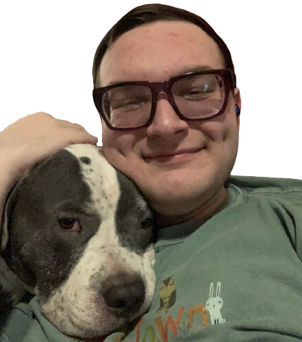

Me!
Chopper!
Hello STARS Temple!
My name is Lydon Gavin and I am very interested in delving deeper into computer science. Ever since my freshmen year of high school, I have fallen in love with the subject. Welcome to my webpage where I'll tell you a little about me and how I put this thing all together!! Let's get started by clicking one of the tabs above! :)